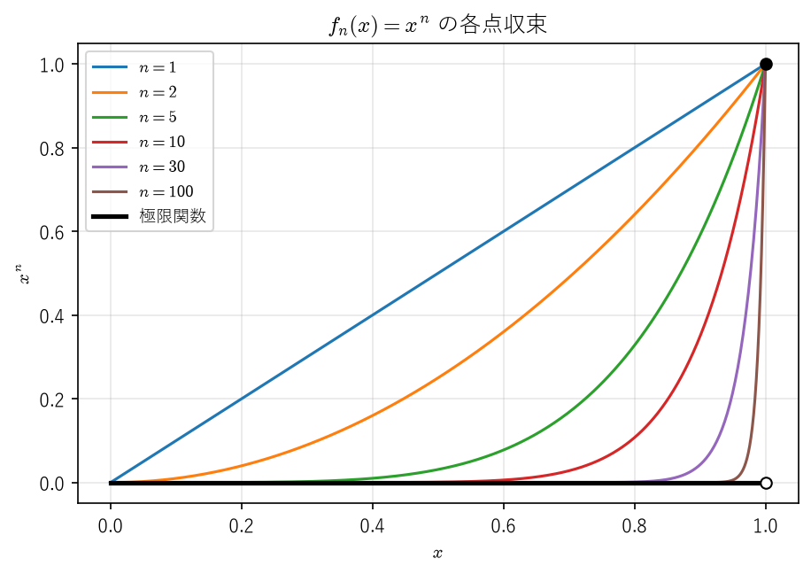
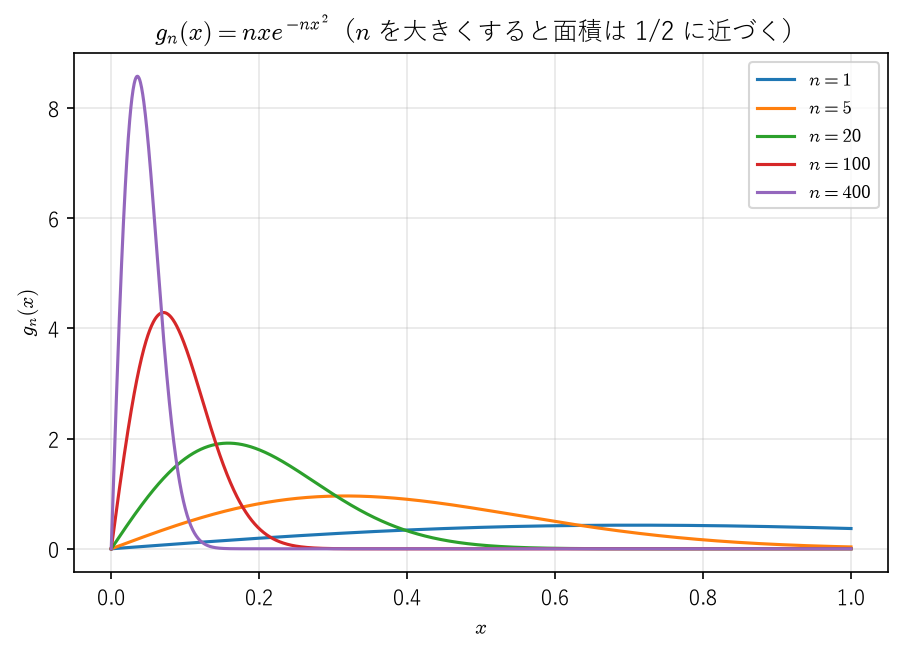
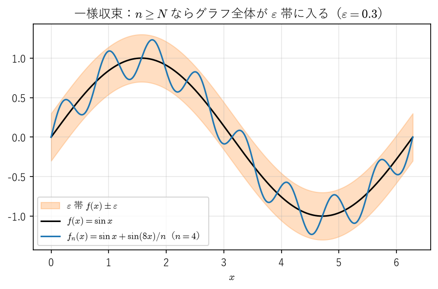
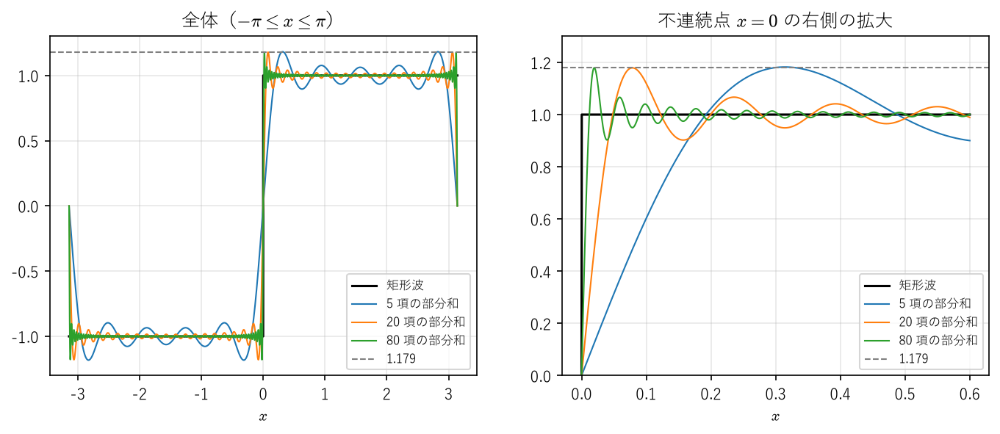

8. 関数列と関数項級数
工学では、複雑な関数を簡単な関数の列で近似することが多い。テイラー多項式、フーリエ級数の部分和、反復法で得られる近似解の列などはその例である。こうした近似の列 \(f_1, f_2, f_3, \ldots\) がある関数 \(f\) に近づくとき、極限の \(f\) は \(f_n\) の性質（連続性、積分の値、導関数）を受け継ぐだろうか。本章で見るように、答えは「収束の仕方による」である。
本章では、各点の値が近づくだけの各点収束と、区間全体で一斉に近づく一様収束を区別し、一様収束であれば極限と連続性・積分・微分との交換が保証されることを示す。後半では、この結果をべき級数に応用し、べき級数が収束半径の内側で項別に微分・積分できることを証明する。最後に、フーリエ級数とギブズ現象を紹介し、一様収束しない近似が実際にどのような振る舞いを示すかを見る。
8.1. 各点収束
以下、\(I\) は区間とし、\(f_n \colon I \to \mathbb{R}\)（\(n = 1, 2, \ldots\)）を関数の列（関数列）とする。
定義 8.1（各点収束）
各 \(x \in I\) について数列 \((f_n(x))\) が \(f(x)\) に収束するとき、関数列 \((f_n)\) は \(I\) 上で \(f\) に各点収束するという。ε-N 論法で書けば、
任意の \(x \in I\) と任意の \(\varepsilon > 0\) に対して、ある \(N\) が存在し、\(n \geq N\) ならば \(|f_n(x) - f(x)| < \varepsilon\) となる
ことである。ここで \(N\) は \(\varepsilon\) だけでなく \(x\) にも依存してよい。
各点収束は自然な定義に見えるが、極限の関数が \(f_n\) の性質を受け継ぐとは限らない。代表的な 3 つの例を挙げる。
例 8.1（連続性が失われる例）
\(I = [0, 1]\) 上で \(f_n(x) = x^n\) とする。\(0 \leq x < 1\) なら \(x^n \to 0\)、\(x = 1\) なら \(x^n = 1\) なので、\((f_n)\) は
に各点収束する（図 8.1）。各 \(f_n\) は連続だが、極限 \(f\) は \(x = 1\) で不連続である。これは、2 つの極限の順序を交換できないことを意味する。


図 8.1 \(f_n(x) = x^n\) の各点収束。極限関数は \(x = 1\) で不連続になる。
例 8.2（積分と極限を交換できない例）
\(I = [0, 1]\) 上で \(g_n(x) = n x e^{-n x^2}\) とする。\(x = 0\) なら \(g_n(0) = 0\) であり、\(x > 0\) なら指数関数の減少が \(n\) の増加より速いので \(g_n(x) \to 0\) である。よって \((g_n)\) は 0 に各点収束する。一方、
なので、\(\lim_{n \to \infty} \int_0^1 g_n(x)\,dx = \frac{1}{2} \neq 0 = \int_0^1 \lim_{n \to \infty} g_n(x)\,dx\) である。\(g_n\) のグラフは、\(x = 1/\sqrt{2n}\) で最大値 \(\sqrt{n/(2e)}\) をとる鋭い山になり、山の面積がほぼ一定のまま原点に寄っていく（図 8.2）。


図 8.2 \(g_n(x) = n x e^{-n x^2}\)。各点では 0 に収束するが、積分の値は \(1/2\) に近づく。
例 8.3（微分と極限を交換できない例）
\(I = \mathbb{R}\) 上で \(h_n(x) = \frac{\sin(nx)}{\sqrt{n}}\) とする。\(|h_n(x)| \leq \frac{1}{\sqrt{n}}\) なので、\(h_n\) は 0 に収束する。しかし \(h_n'(x) = \sqrt{n} \cos(nx)\) であり、たとえば \(x = 0\) で \(h_n'(0) = \sqrt{n} \to \infty\) となって、極限関数 0 の導関数 0 には収束しない。
例 8.3 の \(h_n\) は、後で述べる意味で一様に 0 に収束している。それでも導関数は収束しない。小さな振幅の速い振動は、関数の値には小さな影響しか与えないが、導関数には大きな影響を与える。測定データに含まれる小さな雑音が、数値微分で大きく増幅されるのと同じ現象である（微分）。
8.2. 一様収束
各点収束の定義では、\(N\) が \(x\) に依存してよかった。\(N\) を \(x\) によらず選べることを要求したものが一様収束である。
定義 8.2（一様収束）
任意の \(\varepsilon > 0\) に対して、ある \(N\) が存在し、\(n \geq N\) ならばすべての \(x \in I\) について \(|f_n(x) - f(x)| < \varepsilon\) となるとき、関数列 \((f_n)\) は \(I\) 上で \(f\) に一様収束するという。
各点収束と一様収束の違いは、「任意の \(x\)」と「ある \(N\) が存在する」の順序だけである。量化子の順序が変わると主張の意味が変わることについては、付録 B 論理と証明の基本も参照してほしい。一様収束ならば各点収束である。
一様収束を図で表すと、\(f\) のグラフを上下に \(\varepsilon\) だけ広げた帯（\(\varepsilon\) 帯）を考えたとき、\(n \geq N\) ならば \(f_n\) のグラフ全体がこの帯の中に収まる、ということである（図 8.3）。


図 8.3 一様収束のイメージ。\(f_n\) のグラフ全体が \(f\) の \(\varepsilon\) 帯に入る。
区間 \(I\) 上の関数 \(g\) に対して
とおき、\(g\) の一様ノルム（sup ノルム）という（\(g\) が有界でなければ \(+\infty\) とする）。\(\|f_n - f\|_\infty\) は、区間全体で見た近似の最悪の誤差である。
命題 8.1
\((f_n)\) が \(I\) 上で \(f\) に一様収束するための必要十分条件は、\(\lim_{n \to \infty} \|f_n - f\|_\infty = 0\) である。
証明
一様収束するとし、\(\varepsilon > 0\) に対して定義 8.2 の \(N\) をとる。\(n \geq N\) ならばすべての \(x\) で \(|f_n(x) - f(x)| < \varepsilon\) なので、その上限について \(\|f_n - f\|_\infty \leq \varepsilon\) となる。よって \(\|f_n - f\|_\infty \to 0\) である。逆に \(\|f_n - f\|_\infty \to 0\) ならば、\(\varepsilon > 0\) に対して \(n \geq N\) で \(\|f_n - f\|_\infty < \varepsilon\) となる \(N\) があり、このときすべての \(x\) で \(|f_n(x) - f(x)| \leq \|f_n - f\|_\infty < \varepsilon\) である。
工学的には、一様収束は「区間全体での誤差の保証」にあたる。たとえば、組込みシステムで関数を多項式で近似するとき、必要なのは特定の点での誤差ではなく、入力の範囲全体での最大誤差が許容値以下であることである。これは一様ノルムで誤差を測ることにほかならない。
例 8.4
\(f_n(x) = x^n\) を考える（例 8.1）。
\(0 < r < 1\) とする。区間 \([0, r]\) 上では極限は 0 であり、\(\|f_n - 0\|_\infty = \sup_{0 \leq x \leq r} x^n = r^n \to 0\) なので、一様収束する。
区間 \([0, 1)\) 上でも極限は 0 だが、\(\sup_{0 \leq x < 1} x^n = 1\) なので、一様収束しない。どの \(n\) についても、1 に十分近い \(x\) では \(x^n\) は 1 に近い。
一様収束の判定には、極限の関数 \(f\) を知らなくても使える次の条件が便利である。
定理 8.2（一様収束に関するコーシーの条件）
関数列 \((f_n)\) が \(I\) 上である関数に一様収束するための必要十分条件は、次が成り立つことである。
任意の \(\varepsilon > 0\) に対して、ある \(N\) が存在し、\(m, n \geq N\) ならばすべての \(x \in I\) について \(|f_n(x) - f_m(x)| < \varepsilon\) となる。
証明
（必要性）\(f\) に一様収束するとし、\(n \geq N\) ですべての \(x\) について \(|f_n(x) - f(x)| < \varepsilon/2\) となる \(N\) をとる。\(m, n \geq N\) ならば \(|f_n(x) - f_m(x)| \leq |f_n(x) - f(x)| + |f(x) - f_m(x)| < \varepsilon\) である。
（十分性）条件が成り立つとする。各 \(x \in I\) について数列 \((f_n(x))\) はコーシー列なので、コーシー列の収束により収束する。その極限を \(f(x)\) とおく。\(\varepsilon > 0\) に対して条件の \(N\) をとり、\(n \geq N\) を固定する。すべての \(m \geq N\) とすべての \(x\) について \(|f_n(x) - f_m(x)| < \varepsilon\) なので、\(m \to \infty\) とすると \(|f_n(x) - f(x)| \leq \varepsilon\) となる。この \(N\) は \(x\) によらないので、\((f_n)\) は \(f\) に一様収束する。
8.3. 一様収束と連続性・積分・微分
8.3.1. 連続性
定理 8.3（一様収束と連続性）
\(I\) 上の連続関数の列 \((f_n)\) が \(I\) 上で \(f\) に一様収束するならば、\(f\) は \(I\) 上で連続である。
証明
\(x_0 \in I\) と \(\varepsilon > 0\) を任意にとる。一様収束性から、ある \(N\) について、すべての \(x \in I\) で \(|f_N(x) - f(x)| < \varepsilon/3\) となる。\(f_N\) は \(x_0\) で連続なので、ある \(\delta > 0\) が存在して、\(|x - x_0| < \delta\)、\(x \in I\) ならば \(|f_N(x) - f_N(x_0)| < \varepsilon/3\) となる。このとき
である。よって \(f\) は \(x_0\) で連続である。
この証明で、\(N\) が \(x\) によらないことが本質的に使われている。各点収束では、\(x\) を動かすと \(N\) も変わってしまい、この議論は成り立たない。定理 8.3 の対偶をとると、連続関数の列の極限が不連続ならば、その収束は一様でない。
系 8.4
\(f_n(x) = x^n\) は \([0, 1]\) 上で一様収束しない。
8.3.2. 積分
定理 8.5（一様収束と積分）
\([a, b]\) 上の連続関数の列 \((f_n)\) が \([a, b]\) 上で \(f\) に一様収束するならば、
が成り立つ。
証明
定理 8.3 より \(f\) は連続なので積分可能である（定理 7.5）。定理 7.8 より
であり、命題 8.1 より右辺は 0 に収束する。
例 8.2 の \(g_n\) は \(\|g_n\|_\infty = \sqrt{n/(2e)} \to \infty\) なので一様収束しておらず、定理 8.5 は適用できない。実際、積分と極限は交換できなかった。
8.3.3. 微分
例 8.3 が示すように、\(f_n\) 自身が一様収束しても、導関数の極限については何もいえない。導関数の列のほうに一様収束を仮定する必要がある。
定理 8.6（一様収束と微分）
\((f_n)\) は \([a, b]\) 上の \(C^1\) 級関数（定義 6.2）の列で、次の 2 条件を満たすとする。
数列 \((f_n(a))\) は収束する。
導関数の列 \((f_n')\) は \([a, b]\) 上である関数 \(g\) に一様収束する。
このとき \((f_n)\) は \([a, b]\) 上である \(C^1\) 級関数 \(f\) に一様収束し、\(f' = g\) が成り立つ。すなわち
である。
証明
\(c = \lim_{n \to \infty} f_n(a)\) とおく。定理 8.3 より \(g\) は連続である。\(f(x) = c + \int_a^x g(t)\,dt\) と定めると、微分積分学の基本定理の 1 より \(f\) は微分可能で \(f' = g\) であり、\(g\) が連続なので \(f\) は \(C^1\) 級である。一方、\(f_n'\) は連続なので、微分積分学の基本定理の 2 より \(f_n(x) = f_n(a) + \int_a^x f_n'(t)\,dt\) である。よってすべての \(x \in [a, b]\) について
となる。右辺は \(x\) によらず、\(n \to \infty\) で 0 に収束するので、\((f_n)\) は \(f\) に一様収束する。
8.4. 関数項級数
関数 \(u_1, u_2, \ldots\) の無限和 \(\sum_{n=1}^\infty u_n(x)\) を関数項級数という。べき級数やフーリエ級数はその代表例である。関数項級数の収束は、部分和の関数列の収束として定義する。
定義 8.3（関数項級数の収束）
部分和 \(s_N(x) = \sum_{n=1}^{N} u_n(x)\) の関数列 \((s_N)\) が \(I\) 上で \(s\) に各点収束（一様収束）するとき、関数項級数 \(\sum_{n=1}^\infty u_n(x)\) は \(I\) 上で \(s\) に各点収束（一様収束）するという。
一様収束の判定には、次の判定法が最もよく使われる。
定理 8.7（ワイエルシュトラスの M 判定法）
定数の列 \((M_n)\) があって、すべての \(n\) とすべての \(x \in I\) について \(|u_n(x)| \leq M_n\) が成り立ち、かつ \(\sum_{n=1}^\infty M_n\) が収束するとする。このとき \(\sum_{n=1}^\infty u_n(x)\) は \(I\) 上で一様収束し、各 \(x \in I\) で絶対収束する。
証明
\(\sum M_n\) は収束するので、その部分和の数列はコーシー列である。よって任意の \(\varepsilon > 0\) に対して \(N\) があり、\(m > n \geq N\) ならば \(\sum_{k=n+1}^{m} M_k < \varepsilon\) となる。このとき、すべての \(x \in I\) について
である。定理 8.2 より \((s_N)\) は一様収束する。絶対収束することは、\(\sum |u_n(x)|\) に正項級数の比較判定法（級数）を適用すれば分かる。
部分和は有限和なので、連続性・積分・微分と自由に交換できる。そこで定理 8.3、定理 8.5、定理 8.6 を部分和の列に適用すると、次の系が得られる。
系 8.8（項別積分・項別微分）
各 \(u_n\) が \(I\) 上で連続で、\(\sum u_n\) が \(I\) 上で一様収束するならば、和 \(s(x) = \sum_{n=1}^\infty u_n(x)\) は \(I\) 上で連続である。
各 \(u_n\) が \([a, b]\) 上で連続で、\(\sum u_n\) が \([a, b]\) 上で一様収束するならば、\(\int_a^b \sum_{n=1}^\infty u_n(x)\,dx = \sum_{n=1}^\infty \int_a^b u_n(x)\,dx\) が成り立つ（項別積分）。
各 \(u_n\) が \([a, b]\) 上で \(C^1\) 級で、\(\sum u_n(a)\) が収束し、\(\sum u_n'\) が \([a, b]\) 上で一様収束するならば、\(\sum u_n\) は \([a, b]\) 上で一様収束し、その和は \(C^1\) 級で \(\frac{d}{dx} \sum_{n=1}^\infty u_n(x) = \sum_{n=1}^\infty u_n'(x)\) が成り立つ（項別微分）。
例 8.5
\(\sum_{n=1}^\infty \frac{\cos(nx)}{n^2}\) を考える。すべての \(x \in \mathbb{R}\) で \(\left| \frac{\cos(nx)}{n^2} \right| \leq \frac{1}{n^2}\) であり、\(\sum \frac{1}{n^2}\) は収束する（級数）。M 判定法より、この級数は \(\mathbb{R}\) 上で一様収束し、系 8.8 の 1 より和は連続関数である。一方、項別に微分した級数 \(-\sum \frac{\sin(nx)}{n}\) については \(\sum \frac{1}{n}\) が発散するので M 判定法は使えず、系 8.8 の 3 で項別微分を正当化することはできない。
注意
M 判定法を使うと、\(\mathbb{R}\) 上の至るところで連続であるが、どの点でも微分可能でない関数を構成できる（ワイエルシュトラス関数など。[Rudin1976] の第 7 章を参照）。「連続関数はほとんどの点で微分可能だろう」という直感は正しくない。
8.5. べき級数
定義 8.4（べき級数）
実数の列 \((a_n)_{n \geq 0}\) と実数 \(c\) に対して、\(\sum_{n=0}^\infty a_n (x - c)^n\) の形の関数項級数を、\(c\) を中心とするべき級数という。
\(x - c\) を改めて \(x\) とおけばよいので、以下では中心 \(c = 0\) の場合 \(\sum_{n=0}^\infty a_n x^n\) だけを考える。べき級数は、\(x\) が 0 に近いところで収束し、遠いところで発散するという単純な構造をもつ。その出発点が次の補題である。
補題 8.9（アーベルの補題）
べき級数 \(\sum a_n x^n\) が \(x = x_1 \neq 0\) で収束するならば、\(0 < r < |x_1|\) を満たす任意の \(r\) について、このべき級数は区間 \([-r, r]\) 上で一様収束し、各点で絶対収束する。
証明
\(\sum a_n x_1^n\) が収束するので、項 \(a_n x_1^n\) は 0 に収束し、特に有界である。\(|a_n x_1^n| \leq K\) となる定数 \(K\) をとる。\(|x| \leq r\) ならば、\(q = r/|x_1| < 1\) として
が成り立つ。\(\sum K q^n\) は公比 \(q\) の等比級数なので収束する。M 判定法より主張が従う。
定理 8.10（収束半径）
べき級数 \(\sum a_n x^n\) に対して、次の性質をもつ \(R \in [0, \infty]\) がただ 1 つ存在する。
\(|x| < R\) ならば、\(\sum a_n x^n\) は絶対収束する。
\(|x| > R\) ならば、\(\sum a_n x^n\) は発散する。
\(0 < r < R\) ならば、\(\sum a_n x^n\) は \([-r, r]\) 上で一様収束する。
この \(R\) を、べき級数の収束半径という。和 \(f(x) = \sum a_n x^n\) は区間 \((-R, R)\) 上で連続である。
証明
\(A = \{ |x| : \sum a_n x^n \text{ が収束する} \}\) とおく。\(x = 0\) で級数は収束するので \(A\) は空でない。\(A\) が上に有界なら \(R = \sup A\)、そうでなければ \(R = \infty\) と定める（実数の連続性）。
1, 3：\(0 < r < R\) とする。上限の定義から、\(r < |x_1|\) を満たす \(|x_1| \in A\) がある。アーベルの補題より、級数は \([-r, r]\) 上で一様収束し、各点で絶対収束する。\(|x| < R\) を満たす任意の \(x\) について \(|x| < r < R\) となる \(r\) をとれば、1 が従う。
2：\(|x| > R\) で級数が収束すれば \(|x| \in A\) となり、\(|x| \leq R\) に反する。
1 と 2 を満たす \(R\) が 2 つあれば、その間の \(|x|\) で収束と発散が同時に起こるので、\(R\) はただ 1 つである。最後に、\(x_0 \in (-R, R)\) に対して \(|x_0| < r < R\) となる \(r\) をとると、3 と定理 8.3 より \(f\) は \([-r, r]\) 上で連続であり、特に \(x_0\) で連続である。
注意
\(|x| = R\) の点で収束するかどうかは、べき級数によって異なる（例 8.6）。また、一般に \((-R, R)\) 全体では一様収束しない。たとえば \(\sum x^n\) は \(R = 1\) だが、\((-1, 1)\) 上では一様収束しない（部分和と和 \(\frac{1}{1-x}\) の差は \(\frac{x^{N+1}}{1-x}\) で、\(x \to 1 - 0\) で有界でない）。
収束半径は、係数の比から求められることが多い。
定理 8.11（係数の比による収束半径の公式）
十分大きいすべての \(n\) で \(a_n \neq 0\) であり、極限 \(L = \lim_{n \to \infty} \left| \frac{a_{n+1}}{a_n} \right|\) が \([0, \infty]\) の中に存在するならば、収束半径は \(R = 1/L\) である（ただし \(1/0 = \infty\)、\(1/\infty = 0\) と約束する）。
証明
\(x \neq 0\) とすると、\(\left| \frac{a_{n+1} x^{n+1}}{a_n x^n} \right| = \left| \frac{a_{n+1}}{a_n} \right| |x| \to L|x|\) である。\(L|x| < 1\) ならば、ダランベールの判定法より \(\sum a_n x^n\) は絶対収束する。\(L|x| > 1\) ならば、十分大きいすべての \(n\) で \(|a_{n+1} x^{n+1}| > |a_n x^n|\) となり、項の絶対値が単調に増加するので 0 に収束せず、級数は発散する。よって \(|x| < 1/L\) では収束し、\(|x| > 1/L\) では発散するので、定理 8.10 の一意性より \(R = 1/L\) である。
注意
比の極限が存在しない場合にも使える公式として、\(\frac{1}{R} = \limsup_{n \to \infty} |a_n|^{1/n}\) がある（コーシー・アダマールの公式）。ここで \(\limsup_{n \to \infty} b_n = \lim_{n \to \infty} \sup_{k \geq n} b_k\) は上極限である。証明は [Rudin1976] を参照してほしい。
例 8.6
\(\sum_{n=0}^\infty \frac{x^n}{n!}\)：\(\left| \frac{a_{n+1}}{a_n} \right| = \frac{1}{n+1} \to 0\) なので \(R = \infty\) である。
\(\sum_{n=0}^\infty x^n\)：\(R = 1\) である。\(x = \pm 1\) では項が 0 に収束しないので発散する。
\(\sum_{n=1}^\infty \frac{x^n}{n}\)：\(\frac{n}{n+1} \to 1\) なので \(R = 1\) である。\(x = 1\) では調和級数となって発散し、\(x = -1\) では交代級数となって収束する（級数）。
\(\sum_{n=0}^\infty n!\, x^n\)：\(\frac{(n+1)!}{n!} = n + 1 \to \infty\) なので \(R = 0\) であり、\(x = 0\) 以外では発散する。
8.6. べき級数の項別微分・項別積分
べき級数の最も重要な性質は、収束半径の内側では多項式と同じように項ごとに微分・積分できることである。
定理 8.12（べき級数の項別微分）
べき級数 \(f(x) = \sum_{n=0}^\infty a_n x^n\) の収束半径を \(R > 0\) とする。このとき、項別に微分したべき級数 \(\sum_{n=1}^\infty n a_n x^{n-1}\) の収束半径も \(R\) であり、\(f\) は \((-R, R)\) 上で微分可能で
が成り立つ。
証明
項別に微分したべき級数の収束半径を \(R'\) とする。
\(R' \geq R\) であること：\(|x| < R\) とし、\(|x| < \rho < R\) となる \(\rho\) をとる。\(\sum a_n \rho^n\) は収束するので、\(|a_n| \rho^n \leq K\) となる定数 \(K\) がある。\(q = |x|/\rho < 1\) とおくと、
である。\(\sum n q^{n-1}\) は、\(\frac{(n+1) q^n}{n q^{n-1}} = \frac{n+1}{n} q \to q < 1\) よりダランベールの判定法で収束する。よって \(\sum n a_n x^{n-1}\) は絶対収束する。\(|x| < R\) は任意なので、\(R' \geq R\) である。
\(R' \leq R\) であること：\(|x| < R'\) ならば \(\sum n |a_n| |x|^{n-1}\) は収束し、\(n \geq 1\) で \(|a_n x^n| \leq |x| \cdot n |a_n| |x|^{n-1}\) なので、比較判定法により \(\sum a_n x^n\) も絶対収束する。よって \(R' \leq R\) である。
項別微分できること：\(|x_0| < R\) とし、\(|x_0| < r < R\) となる \(r\) をとる。定理 8.10 の 3 を項別に微分した級数（収束半径 \(R\)）に適用すると、\(\sum n a_n x^{n-1}\) は \([-r, r]\) 上で一様収束する。また \(\sum a_n (-r)^n\) は収束する。\(u_n(x) = a_n x^n\) は \(C^1\) 級なので、系 8.8 の 3 を区間 \([-r, r]\) に適用すれば、\([-r, r]\) 上で \(f'(x) = \sum n a_n x^{n-1}\) が成り立つ。特に \(x = x_0\) で成り立つ。
定理 8.12 を繰り返し適用すると、次の系が得られる。
系 8.13
収束半径 \(R > 0\) のべき級数 \(f(x) = \sum_{n=0}^\infty a_n x^n\) は \((-R, R)\) 上で何回でも微分可能であり、
が成り立つ。また、\(|x| < R\) ならば \(\int_0^x f(t)\,dt = \sum_{n=0}^\infty \frac{a_n}{n+1} x^{n+1}\) が成り立つ（項別積分）。
証明
定理 8.12 より \(f'\) も収束半径 \(R\) のべき級数なので、同じ定理を繰り返し適用でき、\(f^{(k)}(x) = \sum_{n=k}^\infty n(n-1)\cdots(n-k+1) a_n x^{n-k}\) となる。\(x = 0\) を代入すると \(n = k\) の項だけが残り、\(f^{(k)}(0) = k!\, a_k\) を得る。項別積分については、\(|x| < r < R\) となる \(r\) をとると、定理 8.10 の 3 より級数は \([-r, r]\) 上で一様収束するので、系 8.8 の 2 を区間 \([0, x]\)（\(x < 0\) なら \([x, 0]\)）に適用すればよい。
系 8.13 は、収束するべき級数がその和のテイラー級数（テイラーの定理の多項式を無限に続けたもの）にほかならないことを示している。
例 8.7（対数関数のべき級数展開）
等比級数の和の公式より、\(|t| < 1\) で \(\frac{1}{1 + t} = \sum_{n=0}^\infty (-1)^n t^n\) であり、この級数の収束半径は 1 である。\(|x| < 1\) のとき、\(0\) から \(x\) まで項別積分すると（系 8.13）、\(\int_0^x \frac{dt}{1 + t} = \log(1 + x)\) より
を得る。この級数は \(x = -1\) では調和級数の符号を変えたものになって発散するが、\(x = 1\) では収束し（交代調和級数）、その値は \(\log 2\) に等しい。\(x = 1\) は収束半径の境界上の点なので、系 8.13 からはこのことは得られないが、\(-1/2 \leq x \leq 1\)（\(x = 1\) を含む）での展開は、「テイラーの定理と近似」の定理 6.5でテイラーの定理の剰余項を評価してすでに示した。したがって、本例で新たに得られたのは \(-1 < x < -1/2\) での展開であり、定理 6.5 とあわせて、展開は \(-1 < x \leq 1\) で成り立つ。
より一般に、べき級数 \(\sum a_n x^n\) が \(x = R\)（\(0 < R < \infty\)）で収束するならば、その和は \([0, R]\) 上で連続であり、\(\lim_{x \to R - 0} \sum a_n x^n = \sum a_n R^n\) が成り立つ（アーベルの定理。証明は [Sugiura1980] を参照）。この定理を使えば、\(\log(1 + x)\) が \(x = 1\) で連続であることから、定理 6.5 によらずに \(x = 1\) での展開が得られる。
8.7. フーリエ級数とギブズ現象
本節では、一様収束しない関数項級数の重要な例として、フーリエ級数を紹介する。詳しい理論は [SteinShakarchi2003a] を参照してほしい。
定義 8.5（フーリエ級数）
周期 \(2\pi\) の関数 \(f\) が \([-\pi, \pi]\) 上で積分可能であるとき、
を \(f\) のフーリエ係数といい、関数項級数 \(\frac{a_0}{2} + \sum_{k=1}^\infty \bigl( a_k \cos(kx) + b_k \sin(kx) \bigr)\) を \(f\) のフーリエ級数という。
フーリエ級数は、信号をさまざまな周波数の正弦波の重ね合わせとして表すもので、信号処理、振動解析、熱伝導の解析などで基本的な道具である。
例 8.8（矩形波）
周期 \(2\pi\) の関数 \(f\) を、\(0 < x < \pi\) で \(f(x) = 1\)、\(-\pi < x < 0\) で \(f(x) = -1\)、\(x = 0, \pm\pi\) で \(f(x) = 0\) と定める（矩形波）。\(f\) は奇関数なので \(a_k = 0\) であり、
となる。したがって、\(f\) のフーリエ級数は
である。
区分的に滑らかな関数のフーリエ級数は、各点 \(x\) で左右の極限の平均 \(\frac{1}{2} \bigl( f(x + 0) + f(x - 0) \bigr)\) に収束することが知られている（[SteinShakarchi2003a]）。矩形波では、級数 (8.1) はすべての \(x\) で \(f(x)\) に各点収束する。しかし、部分和はすべて連続関数であり、極限 \(f\) は \(x = 0\) で不連続である。したがって定理 8.3 より、\(x = 0\) を内部に含むどの区間上でも、この収束は一様でない。
収束が一様でないことは、目に見える形で現れる。図 8.4 は、級数 (8.1) の最初の \(N\) 項の和 \(S_N(x)\) を描いたものである。不連続点の近くで、部分和は 1 を超えて振動する。項数を増やすと、振動する範囲は不連続点に向かって狭まるが、行き過ぎの高さは小さくならず、約 1.179 に近づく。この現象をギブズ現象という。


図 8.4 矩形波のフーリエ部分和（左：全体、右：不連続点 \(x = 0\) の右側の拡大）。項数を増やしても行き過ぎの高さは約 1.179 のまま変わらない。
行き過ぎの高さは、本章の定理を使って求められる。三角関数の和の公式から
であり、\(x > 0\) で最初に \(S_N' = 0\) となるのは \(x = \frac{\pi}{2N}\) である。\(S_N'\) はその前後で正から負に変わるので、\(S_N\) はここで極大となる（後の数値実験で確かめるように、これが \(0 < x < \pi\) での最大値である）。\(S_N(0) = 0\) なので、置換 \(u = 2Nt\) を使うと
となる。\(v = u/(2N)\) は \([0, \pi/(2N)]\) の範囲にあり、\(v \to 0\) で \(\frac{v}{\sin v} \to 1\) なので、被積分関数 \(\frac{\sin u}{u} \cdot \frac{v}{\sin v}\) は \(N \to \infty\) で \([0, \pi]\) 上 \(\frac{\sin u}{u}\) に一様収束する（\(u = 0\) での値はそれぞれの極限値で補う）。定理 8.5 より極限と積分を交換して、
を得る。跳びの大きさ 2（\(-1\) から \(1\)）に対して、行き過ぎは約 0.179、すなわち跳びの約 9 % である。
工学では、ギブズ現象は信号を有限個の周波数成分で打ち切ったときの「リンギング」として現れる。たとえば、理想的な低域通過フィルタで矩形状の信号を処理すると、立ち上がりの前後に振動が生じる。これを抑えるために、高い周波数の成分を急に打ち切るのではなく、窓関数などで滑らかに減衰させる手法が使われる。
8.7.1. 数値実験
本章の 3 つの現象を数値で確かめる。サンプルコード ch08_uniform_convergence.py は、次の 3 つの実験を行う。sup や最大値は、区間内に細かくとった格子点上の最大値で近似している。
\(x^n\) の \([0, 0.9]\) 上と \([0, 1)\) 上での sup（例 8.4）
\(g_n(x) = n x e^{-n x^2}\) の \([0, 1]\) 上の積分と最大値（例 8.2）
矩形波のフーリエ部分和の最大値（ギブズ現象）
実験 1 と実験 3 の部分を示す。
29def experiment_power() -> None:
30 """実験 1：x^n は [0, 0.9] では一様収束するが、[0, 1) では一様収束しない。"""
31 print("Experiment 1: sup|x^n|")
32 x_closed = np.linspace(0.0, 0.9, 10001)
33 # [0, 1) を近似するため、右端の 1 を除いた格子点を使う
34 x_open = np.linspace(0.0, 1.0, 100001)[:-1]
35 print(f"{'n':>6} {'sup on [0, 0.9]':>16} {'sup on [0, 1)':>16}")
36 for n in [1, 10, 100, 1000]:
37 print(f"{n:>6} {sup_on_grid(x_closed**n):>16.3e} {sup_on_grid(x_open**n):>16.3e}")
38 print()
59def square_wave_partial_sum(num_terms: int, x: FloatArray) -> FloatArray:
60 """矩形波のフーリエ級数 (4/π) Σ sin((2k-1)x)/(2k-1) の、最初の num_terms 項の部分和。"""
61 total = np.zeros_like(x)
62 for k in range(1, num_terms + 1):
63 m = 2 * k - 1
64 total += np.sin(m * x) / m
65 return 4.0 / math.pi * total
実行結果は次のとおりである。
1Experiment 1: sup|x^n|
2 n sup on [0, 0.9] sup on [0, 1)
3 1 9.000e-01 1.000e+00
4 10 3.487e-01 9.999e-01
5 100 2.656e-05 9.990e-01
6 1000 1.748e-46 9.900e-01
7
8Experiment 2: g_n(x) = n x exp(-n x^2) on [0, 1]
9 n integral exact max
10 1 0.316060 0.316060 0.429
11 10 0.499977 0.499977 1.356
12 100 0.500000 0.500000 4.289
13 1000 0.500000 0.500000 13.562
14 10000 0.500000 0.500000 42.888
15
16Experiment 3: maximum of Fourier partial sums of the square wave
17 terms max argmax x
18 5 1.18233 0.31416
19 10 1.17981 0.15708
20 50 1.17901 0.03142
21 100 1.17899 0.01571
22 500 1.17898 0.00314
23limit (theory): (2/pi) Si(pi) = 1.17898...
実験 1 では、\([0, 0.9]\) 上の sup は \(0.9^n\) として急速に 0 に近づくが、\([0, 1)\) 上の sup は 1 に近いままである（格子点の最大値は \(1 - 10^{-5}\) なので表示はわずかに 1 より小さいが、真の sup は常に 1 である）。実験 2 では、積分の値は \(1/2\) に近づく一方、最大値は \(\sqrt{n/(2e)}\) のように増え続ける。実験 3 では、部分和の最大値は 1 ではなく約 1.17898 に近づき、最大値をとる位置は \(\frac{\pi}{2N}\)（\(N\) は項数）のとおり不連続点に近づいていく。
8.8. まとめ
各点収束では、\(N\) が \(x\) に依存してよい。一様収束では、\(N\) を \(x\) によらずに選べる。一様収束は一様ノルム \(\|f_n - f\|_\infty \to 0\) と同値である。
連続関数の列の一様収束の極限は連続である。有界閉区間上では、一様収束すれば極限と積分を交換できる。
微分との交換には、導関数の列の一様収束が必要である。
関数項級数の一様収束は、ワイエルシュトラスの M 判定法で判定できることが多い。
べき級数には収束半径 \(R\) があり、\(|x| < R\) で絶対収束し、\(|x| > R\) で発散する。収束半径の内側では、項別に微分・積分できる。
矩形波のフーリエ級数は各点収束するが一様収束せず、不連続点の近くで部分和が約 9 % 行き過ぎる（ギブズ現象）。
8.9. 演習問題
問題 8.1
\(f_n(x) = \frac{x}{1 + n x^2}\) は \(\mathbb{R}\) 上で 0 に一様収束することを示せ。
問題 8.2
\(f_n(x) = n x (1 - x)^n\) は \([0, 1]\) 上で 0 に各点収束するが、一様収束しないことを示せ。
問題 8.3
\(\sum_{n=1}^\infty \frac{x^n}{n^2}\) は \([-1, 1]\) 上で一様収束し、その和は \([-1, 1]\) 上で連続であることを示せ。
問題 8.4
次のべき級数の収束半径を求めよ。
\(\sum_{n=1}^\infty n^2 x^n\)
\(\sum_{n=1}^\infty \frac{x^n}{2^n n}\)
\(\sum_{n=1}^\infty n^n x^n\)
問題 8.5
\(|x| < 1\) で \(\sum_{n=0}^\infty x^n = \frac{1}{1 - x}\) であることを使い、\(\sum_{n=1}^\infty n x^n = \frac{x}{(1 - x)^2}\)（\(|x| < 1\)）を示せ。また、\(\sum_{n=1}^\infty \frac{n}{2^n}\) の値を求めよ。
問題 8.6
\(|x| < 1\) で \(\arctan x = \sum_{n=0}^\infty \frac{(-1)^n}{2n + 1} x^{2n+1}\) が成り立つことを示せ。
8.10. 略解
問題 8.1 の略解
\(x = 0\) では \(f_n(0) = 0\) である。\(x \neq 0\) では、相加平均と相乗平均の関係より \(1 + n x^2 \geq 2 \sqrt{n} |x|\) なので、\(|f_n(x)| \leq \frac{1}{2\sqrt{n}}\) である。よって \(\|f_n\|_\infty \leq \frac{1}{2\sqrt{n}} \to 0\) であり、命題 8.1 より 0 に一様収束する。
問題 8.2 の略解
\(x = 0, 1\) では \(f_n(x) = 0\) である。\(0 < x < 1\) では \(q = 1 - x \in (0, 1)\) として \(n q^n \to 0\) なので、0 に各点収束する。\(f_n'(x) = n (1 - x)^{n-1} \bigl( 1 - (n+1) x \bigr)\) より、\(f_n\) は \(x = \frac{1}{n+1}\) で最大値 \(\left( \frac{n}{n+1} \right)^{n+1} = \left( 1 + \frac{1}{n} \right)^{-(n+1)}\) をとる。これは \(n \to \infty\) で \(e^{-1}\) に収束するので、\(\|f_n\|_\infty\) は 0 に収束せず、一様収束しない。
問題 8.3 の略解
\(|x| \leq 1\) で \(\left| \frac{x^n}{n^2} \right| \leq \frac{1}{n^2}\) であり、\(\sum \frac{1}{n^2}\) は収束する。M 判定法より \([-1, 1]\) 上で一様収束し、各項は連続なので、系 8.8 の 1 より和は連続である。
問題 8.4 の略解
定理 8.11 を使う。
\(\frac{(n+1)^2}{n^2} \to 1\) より \(R = 1\)。
\(\frac{2^n n}{2^{n+1} (n+1)} = \frac{n}{2(n+1)} \to \frac{1}{2}\) より \(R = 2\)。
\(\frac{(n+1)^{n+1}}{n^n} = (n+1) \left( 1 + \frac{1}{n} \right)^n \to \infty\) より \(R = 0\)。
問題 8.5 の略解
\(\sum x^n\) の収束半径は 1 である。定理 8.12 より、\(|x| < 1\) で \(\sum_{n=1}^\infty n x^{n-1} = \frac{d}{dx} \frac{1}{1 - x} = \frac{1}{(1 - x)^2}\) となる。両辺に \(x\) を掛ければよい。\(x = 1/2\) を代入すると、\(\sum_{n=1}^\infty \frac{n}{2^n} = \frac{1/2}{(1/2)^2} = 2\) である。
問題 8.6 の略解
\(|t| < 1\) で \(\frac{1}{1 + t^2} = \sum_{n=0}^\infty (-1)^n t^{2n}\) であり（公比 \(-t^2\) の等比級数）、このべき級数の収束半径は 1 である。\((\arctan x)' = \frac{1}{1 + x^2}\)、\(\arctan 0 = 0\) なので、\(|x| < 1\) で系 8.13 の項別積分を使うと、\(\arctan x = \int_0^x \frac{dt}{1 + t^2} = \sum_{n=0}^\infty \frac{(-1)^n}{2n + 1} x^{2n+1}\) を得る。なお、\(x = 1\) でも右辺は収束し、アーベルの定理により \(\frac{\pi}{4} = 1 - \frac{1}{3} + \frac{1}{5} - \cdots\) が成り立つ。